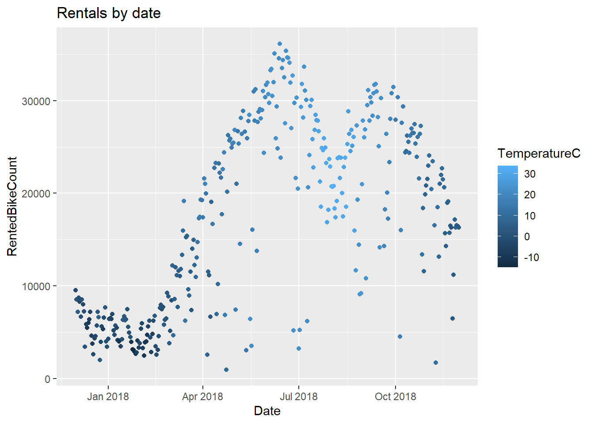
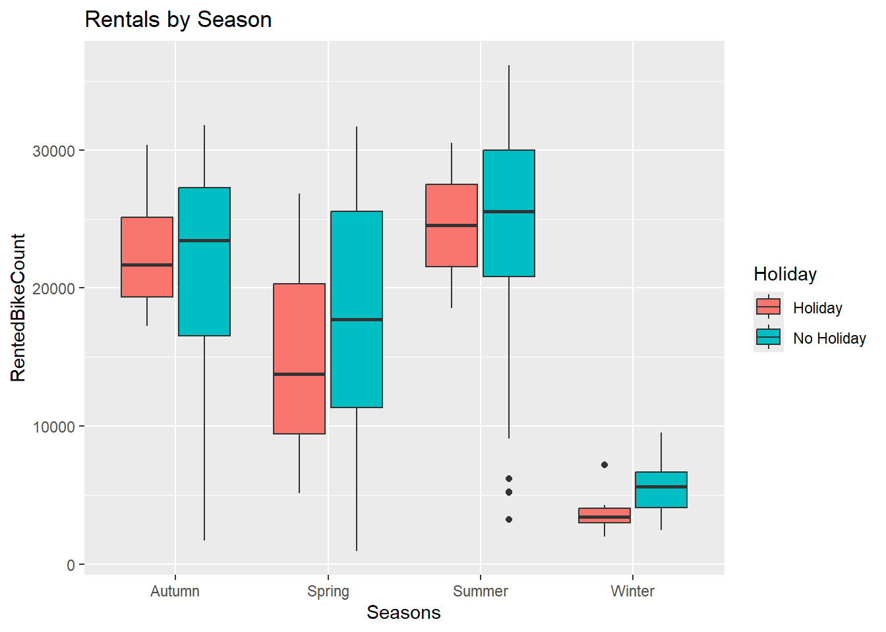
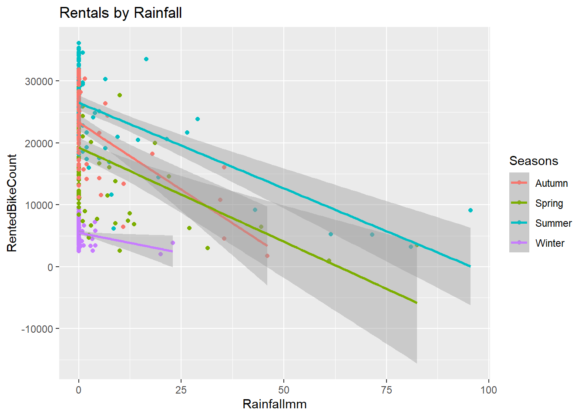

This dataset keeps track of rented bikes / hour in Seoul, as well as a collection of climate and business metrics.
By default, make.names() replaces weird characters (degrees, ^2, etc.) with periods, so the second line just removes those periods.
bike <-read_csv("https://www4.stat.ncsu.edu/~online/datasets/SeoulBikeData.csv", locale =locale(encoding ="latin1"))
Rows: 8760 Columns: 14
── Column specification ────────────────────────────────────────────────────────
Delimiter: ","
chr (4): Date, Seasons, Holiday, Functioning Day
dbl (10): Rented Bike Count, Hour, Temperature(°C), Humidity(%), Wind speed ...
ℹ Use `spec()` to retrieve the full column specification for this data.
ℹ Specify the column types or set `show_col_types = FALSE` to quiet this message.
## By default, make.names() replaces weird characters (degrees, ^2, etc.)## with periods, so this line just removes those periodscolnames(bike) <-gsub("\\.", "", make.names(colnames(bike)))bike <- bike|>mutate(Date =dmy(Date),Seasons =as.factor(Seasons),Holiday =as.factor(Holiday),FunctioningDay =as.factor(FunctioningDay) )
summary(bike)
Date RentedBikeCount Hour TemperatureC
Min. :2017-12-01 Min. : 0.0 Min. : 0.00 Min. :-17.80
1st Qu.:2018-03-02 1st Qu.: 191.0 1st Qu.: 5.75 1st Qu.: 3.50
Median :2018-06-01 Median : 504.5 Median :11.50 Median : 13.70
Mean :2018-06-01 Mean : 704.6 Mean :11.50 Mean : 12.88
3rd Qu.:2018-08-31 3rd Qu.:1065.2 3rd Qu.:17.25 3rd Qu.: 22.50
Max. :2018-11-30 Max. :3556.0 Max. :23.00 Max. : 39.40
Humidity Windspeedms Visibility10m DewpointtemperatureC
Min. : 0.00 Min. :0.000 Min. : 27 Min. :-30.600
1st Qu.:42.00 1st Qu.:0.900 1st Qu.: 940 1st Qu.: -4.700
Median :57.00 Median :1.500 Median :1698 Median : 5.100
Mean :58.23 Mean :1.725 Mean :1437 Mean : 4.074
3rd Qu.:74.00 3rd Qu.:2.300 3rd Qu.:2000 3rd Qu.: 14.800
Max. :98.00 Max. :7.400 Max. :2000 Max. : 27.200
SolarRadiationMJm2 Rainfallmm Snowfallcm Seasons
Min. :0.0000 Min. : 0.0000 Min. :0.00000 Autumn:2184
1st Qu.:0.0000 1st Qu.: 0.0000 1st Qu.:0.00000 Spring:2208
Median :0.0100 Median : 0.0000 Median :0.00000 Summer:2208
Mean :0.5691 Mean : 0.1487 Mean :0.07507 Winter:2160
3rd Qu.:0.9300 3rd Qu.: 0.0000 3rd Qu.:0.00000
Max. :3.5200 Max. :35.0000 Max. :8.80000
Holiday FunctioningDay
Holiday : 432 No : 295
No Holiday:8328 Yes:8465
bike |>summarize(across(everything(), ~sum(is.na(.)))) |>pivot_longer(everything())
Based on the summaries, it looks like our data is pretty evenly spread throughout the year - ~2000 measurements a season.
Grouping the data by date - Step 7
bike_daily <- bike |>group_by(Date, Seasons, Holiday)|>summarize(across(c(RentedBikeCount, Rainfallmm, Snowfallcm), sum),across(c(TemperatureC:SolarRadiationMJm2), mean))
`summarise()` has regrouped the output.
ℹ Summaries were computed grouped by Date, Seasons, and Holiday.
ℹ Output is grouped by Date and Seasons.
ℹ Use `summarise(.groups = "drop_last")` to silence this message.
ℹ Use `summarise(.by = c(Date, Seasons, Holiday))` for per-operation grouping
(`?dplyr::dplyr_by`) instead.
Recreate basic summary stats.
summary(bike_daily)
Date Seasons Holiday RentedBikeCount
Min. :2017-12-01 Autumn:81 Holiday : 17 Min. : 977
1st Qu.:2018-02-27 Spring:90 No Holiday:336 1st Qu.: 6967
Median :2018-05-28 Summer:92 Median :18563
Mean :2018-05-28 Winter:90 Mean :17485
3rd Qu.:2018-08-24 3rd Qu.:26285
Max. :2018-11-30 Max. :36149
Rainfallmm Snowfallcm TemperatureC Humidity
Min. : 0.000 Min. : 0.000 Min. :-14.738 Min. :22.25
1st Qu.: 0.000 1st Qu.: 0.000 1st Qu.: 3.304 1st Qu.:47.58
Median : 0.000 Median : 0.000 Median : 13.738 Median :57.17
Mean : 3.576 Mean : 1.863 Mean : 12.776 Mean :58.17
3rd Qu.: 0.500 3rd Qu.: 0.000 3rd Qu.: 22.592 3rd Qu.:67.71
Max. :95.500 Max. :78.700 Max. : 33.742 Max. :95.88
Windspeedms Visibility10m DewpointtemperatureC SolarRadiationMJm2
Min. :0.6625 Min. : 214.3 Min. :-27.750 Min. :0.02917
1st Qu.:1.3042 1st Qu.:1087.0 1st Qu.: -5.188 1st Qu.:0.28333
Median :1.6583 Median :1557.8 Median : 4.612 Median :0.56500
Mean :1.7261 Mean :1434.0 Mean : 3.954 Mean :0.56773
3rd Qu.:1.9542 3rd Qu.:1874.3 3rd Qu.: 14.921 3rd Qu.:0.82000
Max. :4.0000 Max. :2000.0 Max. : 25.038 Max. :1.21667
The plot below looks at bike rental counts and temperatures across dates.
ggplot(bike_daily, aes(x = Date, y = RentedBikeCount, color = TemperatureC))+geom_point()+labs(title ="Rentals by date")

The plots below look at bike rental counts across seasons and whether it is a holiday.
ggplot(bike_daily, aes(x = Seasons, y = RentedBikeCount, fill = Holiday)) +geom_col() +labs(title ="Rentals by Season")
ggplot(bike_daily, aes(x = Seasons, y = RentedBikeCount, fill = Holiday)) +geom_boxplot() +labs(title ="Rentals by Season")

The plot below looks at the relationship between bike rentals and rainfall.
ggplot(bike_daily, aes(x = Rainfallmm, y = RentedBikeCount, color = Seasons)) +geom_point() +geom_smooth(method = lm) +labs(title ="Rentals by Rainfall")
`geom_smooth()` using formula = 'y ~ x'

All of the above plots support the idea that bike rentals are higher during the warmer seasons. Bike rentals also seem to be lower on holidays and lower when it is raining.
We can quantify some of these patterns further by reporting correlation statistics.
# A tibble: 263 × 12
# Groups: Date, Seasons [263]
Date Seasons Holiday RentedBikeCount Rainfallmm Snowfallcm TemperatureC
<date> <fct> <fct> <dbl> <dbl> <dbl> <dbl>
1 2018-09-02 Autumn No Hol… 26881 0 0 25.0
2 2018-09-03 Autumn No Hol… 10802 34.5 0 23.6
3 2018-09-04 Autumn No Hol… 29529 0 0 23.3
4 2018-09-07 Autumn No Hol… 30381 1.5 0 22.2
5 2018-09-08 Autumn No Hol… 29813 0 0 21.7
6 2018-09-09 Autumn No Hol… 28354 0 0 22.0
7 2018-09-11 Autumn No Hol… 31694 0 0 21.6
8 2018-09-13 Autumn No Hol… 30991 0 0 23.4
9 2018-09-14 Autumn No Hol… 28199 0.5 0 23.5
10 2018-09-15 Autumn No Hol… 25079 0.2 0 23.2
# ℹ 253 more rows
# ℹ 5 more variables: Humidity <dbl>, Windspeedms <dbl>, Visibility10m <dbl>,
# DewpointtemperatureC <dbl>, SolarRadiationMJm2 <dbl>
#view testing settesting
# A tibble: 90 × 12
# Groups: Date, Seasons [90]
Date Seasons Holiday RentedBikeCount Rainfallmm Snowfallcm TemperatureC
<date> <fct> <fct> <dbl> <dbl> <dbl> <dbl>
1 2017-12-02 Winter No Hol… 8523 0 0 1.32
2 2017-12-03 Winter No Hol… 7222 4 0 4.88
3 2017-12-17 Winter No Hol… 3776 0 0 -7.01
4 2017-12-20 Winter No Hol… 4568 0.2 48.3 -4.29
5 2017-12-21 Winter No Hol… 5734 0 38.9 -0.846
6 2017-12-26 Winter No Hol… 5605 0 0 -3.27
7 2017-12-27 Winter No Hol… 5351 0 0 -7.00
8 2018-01-06 Winter No Hol… 5180 0 0 -2.75
9 2018-01-09 Winter No Hol… 5500 0 10.8 -3.87
10 2018-01-14 Winter No Hol… 4225 0 0 0.0208
# ℹ 80 more rows
# ℹ 5 more variables: Humidity <dbl>, Windspeedms <dbl>, Visibility10m <dbl>,
# DewpointtemperatureC <dbl>, SolarRadiationMJm2 <dbl>
Fitting MLR Models
Create Weekday/Weekend (factor) variable and standardize numeric variables.
# Create a function to output weekday or weekend as a factor variabledate_factor <-function(Date) { wend_wday <-wday(Date,label =TRUE) weekend <-ifelse(wend_wday %in%c("Sat", "Sun"), "Weekend", "Weekday")return(as.factor(weekend))}# Modify training data settraining <- training |>mutate(Weekend =date_factor(Date))# View training data settraining
# A tibble: 263 × 13
# Groups: Date, Seasons [263]
Date Seasons Holiday RentedBikeCount Rainfallmm Snowfallcm TemperatureC
<date> <fct> <fct> <dbl> <dbl> <dbl> <dbl>
1 2018-09-02 Autumn No Hol… 26881 0 0 25.0
2 2018-09-03 Autumn No Hol… 10802 34.5 0 23.6
3 2018-09-04 Autumn No Hol… 29529 0 0 23.3
4 2018-09-07 Autumn No Hol… 30381 1.5 0 22.2
5 2018-09-08 Autumn No Hol… 29813 0 0 21.7
6 2018-09-09 Autumn No Hol… 28354 0 0 22.0
7 2018-09-11 Autumn No Hol… 31694 0 0 21.6
8 2018-09-13 Autumn No Hol… 30991 0 0 23.4
9 2018-09-14 Autumn No Hol… 28199 0.5 0 23.5
10 2018-09-15 Autumn No Hol… 25079 0.2 0 23.2
# ℹ 253 more rows
# ℹ 6 more variables: Humidity <dbl>, Windspeedms <dbl>, Visibility10m <dbl>,
# DewpointtemperatureC <dbl>, SolarRadiationMJm2 <dbl>, Weekend <fct>
# Modify testing data set |>testing <- testing |>mutate(Weekend =date_factor(Date))# View testing data settesting
# A tibble: 90 × 13
# Groups: Date, Seasons [90]
Date Seasons Holiday RentedBikeCount Rainfallmm Snowfallcm TemperatureC
<date> <fct> <fct> <dbl> <dbl> <dbl> <dbl>
1 2017-12-02 Winter No Hol… 8523 0 0 1.32
2 2017-12-03 Winter No Hol… 7222 4 0 4.88
3 2017-12-17 Winter No Hol… 3776 0 0 -7.01
4 2017-12-20 Winter No Hol… 4568 0.2 48.3 -4.29
5 2017-12-21 Winter No Hol… 5734 0 38.9 -0.846
6 2017-12-26 Winter No Hol… 5605 0 0 -3.27
7 2017-12-27 Winter No Hol… 5351 0 0 -7.00
8 2018-01-06 Winter No Hol… 5180 0 0 -2.75
9 2018-01-09 Winter No Hol… 5500 0 10.8 -3.87
10 2018-01-14 Winter No Hol… 4225 0 0 0.0208
# ℹ 80 more rows
# ℹ 6 more variables: Humidity <dbl>, Windspeedms <dbl>, Visibility10m <dbl>,
# DewpointtemperatureC <dbl>, SolarRadiationMJm2 <dbl>, Weekend <fct>
# Standardized numeric variables for the test and training setsstd_training <- training |>ungroup() |>mutate(across(where(is.numeric) &!all_of("RentedBikeCount"),~ (.x -mean(.x, na.rm =TRUE)) /sd(.x, na.rm =TRUE) ) )train_means <- training |>ungroup() |>summarise(across(where(is.numeric) &!all_of("RentedBikeCount"),~mean(.x, na.rm =TRUE) ) )train_sds <- training |>ungroup() |>summarise(across(where(is.numeric) &!all_of("RentedBikeCount"),~sd(.x, na.rm =TRUE) ) )std_testing <- testing |>ungroup() |>mutate(across(where(is.numeric) &!all_of("RentedBikeCount"),~ (.x - train_means[[cur_column()]]) / train_sds[[cur_column()]] ) )
Fitting Models
First model is to use the Rented Bike Count as our target variable and all other variables as our features. Use RMSE as the metric to evaluate the fit of the model using the training data.
#predict the y values for the x values in the test setY_test <-predict(all_var_fit, newdata = std_testing)#Calculate the RMSE for the test setrmse_var <-rmse_vec(truth = std_testing$RentedBikeCount,estimate = Y_test)
Second model is to use Rented Bike Count as our target variable and all the terms in the first model but also interactions between seasons and holiday, seasons and temp, and temp and rainfall (all standardized variables used here).
#fit the model with all the variables and the interaction termsinteraction_var_fit <-lm(RentedBikeCount ~ . -Date +Seasons:Holiday +Seasons:TemperatureC+TemperatureC:Rainfallmm, std_training)#See the results of the modelsummary(interaction_var_fit)
#predict the y values for the x values in the test setY_test_inter <-predict(interaction_var_fit, newdata = std_testing)#Calculate the RMSE for the test setrmse_inter <-rmse_vec(truth = std_testing$RentedBikeCount,estimate = Y_test_inter)
Third model is to use Rented Bike Count as our target variable and all the terms in the first model plus the interaction terms in the second model and include quadratic terms of temperature and humidity squared (all standardized variables used here).
#fit the model with all the variables, the interaction terms, and the quadratic termsquad_var_fit <-lm(RentedBikeCount ~ . -Date +Seasons:Holiday +Seasons:TemperatureC+TemperatureC:Rainfallmm +I(TemperatureC^2) +I(Humidity^2), data = std_training)#See the results of the modelsummary(quad_var_fit)
#predict the y values for the x values in the test setY_test_quad <-predict(quad_var_fit, newdata=std_testing)#Calculate the RMSE for the test setrmse_quad <-rmse_vec(truth = std_testing$RentedBikeCount,estimate = Y_test_quad)c(Main_Effects = rmse_var,Interactions = rmse_inter,Quadratic = rmse_quad)
Model 2: The RMSE for all variables plus the interaction terms is 3128.248
Model 3: The RMSE for all variables, interaction terms, and quadratic terms is 3133.055
The model that minimizes the test set RMSE is Model 2 which includes all the variables and the interaction terms.
Fit that model to the entire data set to create the final fitted model.
#Standardize the variables with all the datastd_bike_daily <- bike_daily |>ungroup() |>mutate(across(where(is.numeric) &!all_of("RentedBikeCount"),~ (.x -mean(.x, na.rm =TRUE)) /sd(.x, na.rm =TRUE) ) )#fit the model with all the variables and the interaction terms and all datainteraction_var_fit_full <-lm(RentedBikeCount ~ . -Date +Seasons:Holiday +Seasons:TemperatureC+TemperatureC:Rainfallmm, std_bike_daily)#See the results of the modelsummary(interaction_var_fit_full)
#predict the y values for the x values in the test setY_test_inter_full <-predict(interaction_var_fit_full, newdata = std_bike_daily)#Calculate the RMSE for the test setrmse_inter_full <-rmse_vec(truth = std_bike_daily$RentedBikeCount,estimate = Y_test_inter_full)rmse_inter
[1] 3128.248
#Report the coefficients of the final fitted modelcoefficients_full <-data.frame(Term =names(coef(interaction_var_fit_full)),Coefficient =coef(interaction_var_fit_full))coefficients_full